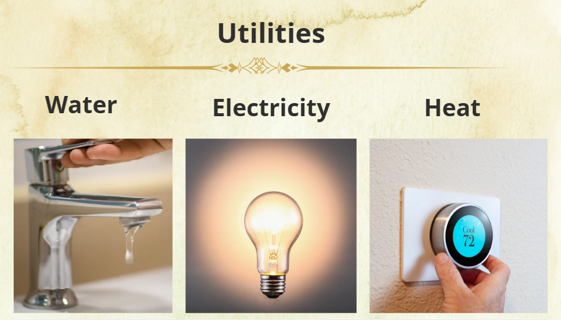
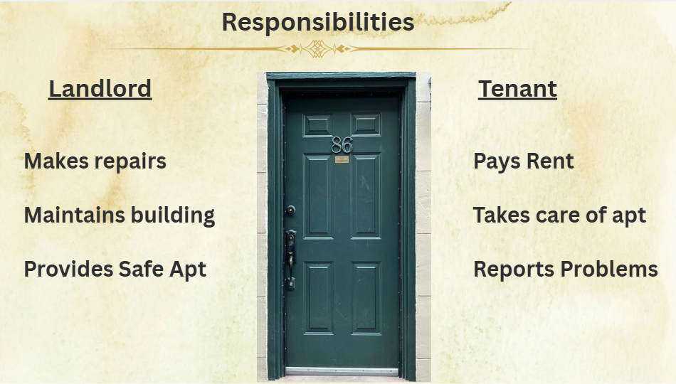

Adult ESL Housing Module
Imagine arriving in a new country where you are still learning English—and now you need to find an apartment, understand a lease, communicate with a landlord, and learn your rights and responsibilities as a tenant.
This Canva-based instructional module was designed for multilingual adult English language learners enrolled in a federally funded cultural orientation program at Dorcas International Institute of Rhode Island. Learners represented diverse countries, cultures, and language backgrounds as they developed the English skills and practical knowledge needed to successfully navigate everyday life in the United States.
This housing module is one example from a series of ten instructor-led learning modules I developed for the year-long program. Together, the modules addressed essential topics that help newcomers navigate life in the United States, including housing, healthcare, employment, transportation, financial literacy, education, and community resources.
As the instructional designer and facilitator, I translated complex information into accessible learning experiences using plain language, visual communication, and learner-centered design. Each module was created to help adult learners build the knowledge and confidence to navigate unfamiliar systems and apply new skills in real-world situations.
This project highlights my ability to design inclusive learning experiences that make complex information understandable for diverse audiences through instructional design, visual learning strategies, accessibility, and adult education best practices.
The following examples demonstrate how visual design strategies were used to introduce essential housing concepts and support practical learning for adult English language learners.
1. Foundational Vocabulary
Introduced essential housing vocabulary using visual supports and simple sentence structures.

2. Essential Personal Information
Introduced key address information to support everyday communication and independence.

3. Understanding the Lease Agreement
Explained key sections of a lease agreement using clear language and visual supports to build confidence in reviewing rental documents.
4. Setting Up Utilities
Introduced the process of setting up essential utilities, including electricity, water, and internet, to prepare learners for independent living.

5. Reporting Maintenance Issues
Demonstrated how to recognize common maintenance concerns and communicate repair requests clearly and appropriately.
6. Course Summary
Concluded the module by reviewing key concepts and reinforcing practical skills needed to navigate the rental process with greater confidence.

This housing module represents my approach to designing accessible, learner-centered instruction for adults navigating new systems and experiences in the United States.
By combining visual learning strategies, simplified language, and practical scenarios, I created instructional materials that supported comprehension, participation, and confidence among multilingual adult learners.
This project reflects my ability to transform complex information into meaningful learning experiences, collaborate with community partners, and develop instructional resources that respond to the needs of diverse learners.